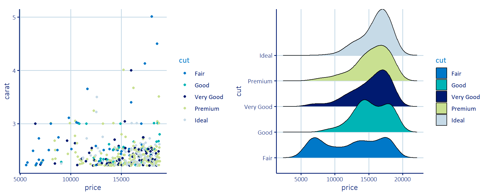
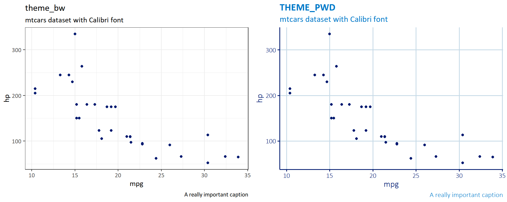
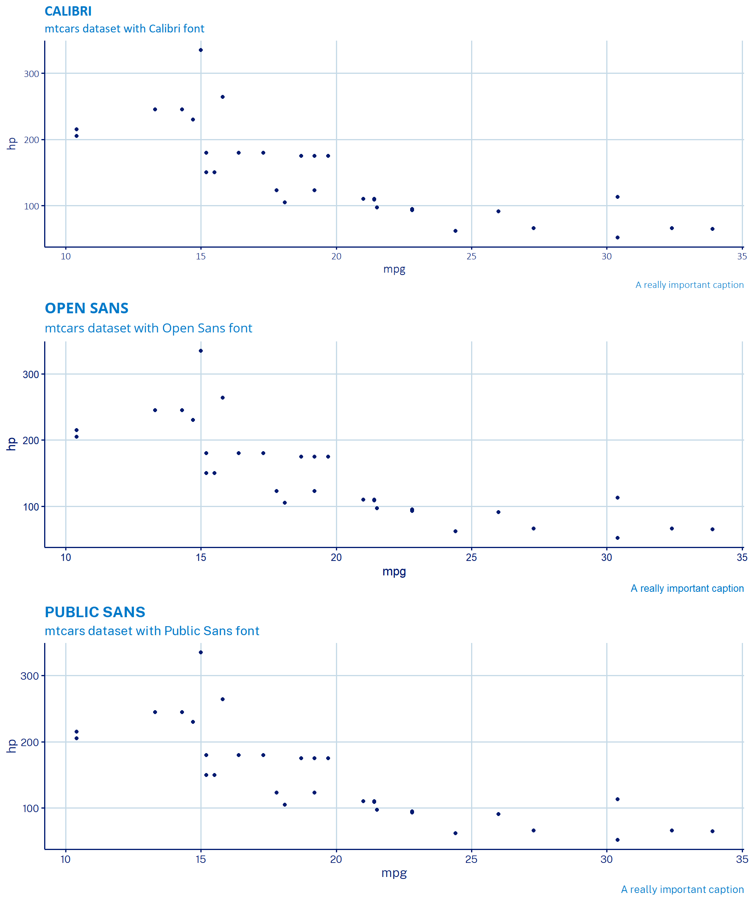
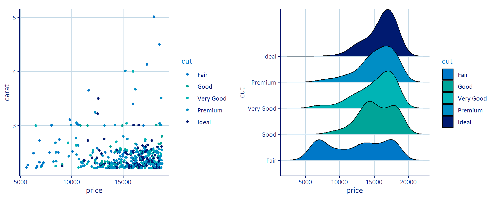
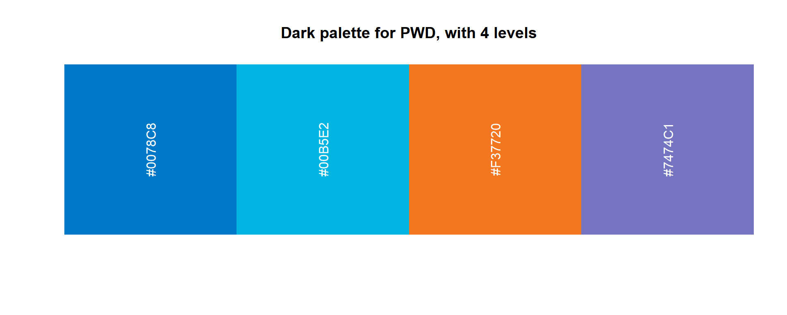

Main

The goal of pwdthemes is to provide easy to use theme options for employees of the Philadelphia Water Department within R and Rmarkdown. This package provides color and fill options for ggplot2 figures. It also provides rmarkdown templates that will allow people to easy produce Rmarkdown reports with PWD branding on them.
If you are within the PWD network, you can install the released version of pwdthemes from PWD’s Internal Package Directory with:
And the development version from GitHub with:
NOTE: you will have to have RTools installed in order to install this package using either install.packages or install_github methods
ggplot2 themeThis package provides a custom ggplot2 theme with the function theme_pwd. This function applies font and style options that are based on the PWD styleguide. There were not any definite figure style recommendations, other than the title font, so I made some decisions about style. Please feel free to suggest any changes that you think would look good.
library(pwdthemes)
library(ggplot2)
# set geoms to pwd colors
pwd_geoms()
library(dplyr)
library(ggridges)
library(patchwork)bw <- ggplot(mtcars, aes(mpg, hp)) +
geom_point() +
labs(
title = "theme_bw",
subtitle = "mtcars dataset with Calibri font",
caption = "A really important caption"
) +
theme_bw(base_family = "Calibri")
pwd <- ggplot(mtcars, aes(mpg, hp)) +
geom_point() +
labs(
title = "theme_pwd",
subtitle = "mtcars dataset with Calibri font",
caption = "A really important caption"
) +
theme_pwd()
bw + pwd
This package provides two different fonts for use with theme_pwd. By default, the Calibri font will be used if it is available on your computer. If it is not available, then the ggplot2 font will be used. Two other packages, Open Sans and Public Sans, are shipped with this package. These packages can be installed with the import_open_sans and import_public_sans functions, respectively. It is worth noting, that these likely will need to be installed on your computer, and the directory of the fonts to be installed will be displayed when you use these functions. You can then specify either of these two fonts as the base_family option in theme_pwd.
p <- ggplot(mtcars, aes(mpg, hp)) +
geom_point()
cal <- p +
labs(
title = "Calibri",
subtitle = "mtcars dataset with Calibri font",
caption = "A really important caption"
) +
theme_pwd()
os <- p +
labs(
title = "Open Sans",
subtitle = "mtcars dataset with Open Sans font",
caption = "A really important caption"
) +
theme_pwd(base_family = "Open Sans")
ps <- p +
labs(
title = "Public Sans",
subtitle = "mtcars dataset with Public Sans font",
caption = "A really important caption"
) +
theme_pwd(base_family = "Public Sans")
cal + os + ps + plot_layout(ncol = 1)
When pwdthemes is loaded, the default ggplot2 color and scale values are updated to reflect PWD color palettes. If you do not want this, you can easily undo it by calling undo_pwd_geoms(). To reapply it after undoing it, call pwd_geoms().
ggplot2 scalesThis package provides functions that allow you to easily add PWD palettes to ggplot2 figures. These can be added using the scale_color_pwd and scale_fill_pwd functions depending on whether you are using the color or fill aesthetic. The palettes provided with these functions are based on the PWD Styleguide. The available palettes are shown in the table below.
| Palette | Default n | Colors |
|---|---|---|
| main | 7 | Blue (#0078C8), Persian Green (#00B388), Cerulean (#00B5E2), Resolution Blue (#001A70), Pear (#DBE442), Ziggurat (#B8DDE1), Botticelli (#C6DAE7) |
| main_dark | 4 | Blue (#0078C8), Persian Green (#00B388), Cerulean (#00B5E2), Resolution Blue (#001A70) |
| main_light | 4 | Blue (#0078C8), Pear (#DBE442), Ziggurat (#B8DDE1), Botticelli (#C6DAE7) |
| highlights | 6 | Tango (#F37720), Burnt Sienna (#F26C51), Blue Marguerite (#7474C1), Grandis (#FDD086), Zinnwaldite (#ECC382), Gray Suit (#C6C4D2) |
| highlights_dark | 3 | Tango (#F37720), Burnt Sienna (#F26C51), Blue Marguerite (#7474C1) |
| highlights_light | 3 | Grandis (#FDD086), Zinnwaldite (#ECC382), Gray Suit (#C6C4D2) |
| map | 4 | Muddy Waters (#B9975B), Trendy Green (#76881D), Primrose (#F1EB9C), Pine Glade (#BFCC80) |
| map_dark | 2 | Muddy Waters (#B9975B), Trendy Green (#76881D) |
| map_light | 2 | Primrose (#F1EB9C), Pine Glade (#BFCC80) |
| dark | 7 | Blue (#0078C8), Persian Green (#00B388), Cerulean (#00B5E2), Resolution Blue (#001A70), Tango (#F37720), Burnt Sienna (#F26C51), Blue Marguerite (#7474C1) |
| light | 7 | Blue (#0078C8), Pear (#DBE442), Ziggurat (#B8DDE1), Botticelli (#C6DAE7), Grandis (#FDD086), Zinnwaldite (#ECC382), Gray Suit (#C6C4D2) |
| full | 13 | Blue (#0078C8), Persian Green (#00B388), Cerulean (#00B5E2), Resolution Blue (#001A70), Pear (#DBE442), Ziggurat (#B8DDE1), Botticelli (#C6DAE7), Tango (#F37720), Burnt Sienna (#F26C51), Blue Marguerite (#7474C1), Grandis (#FDD086), Zinnwaldite (#ECC382), Gray Suit (#C6C4D2) |
A few of them will be demonstrated here:
large_diamonds <- diamonds %>%
filter(carat > 2.2)
pc <- ggplot(large_diamonds, aes(price, carat, color = cut)) +
geom_point() +
theme_pwd()
pf <- ggplot(large_diamonds, aes(price, cut, fill = cut)) +
geom_density_ridges() +
theme_pwd()pc_main_d <- pc + scale_color_pwd("main_dark")
pf_main_d <- pf + scale_fill_pwd("main_dark")
pc_main_d + pf_main_d
You can view what the palette you choose will look like for any given number of variables using the view_pwd_palette function. You simply have to pass the palette you are interested as a character string and the number of levels of color required. If you do not pass a number to the n argument, it will show you the default number of colors for a given palette


This package provides several Rmarkdown template. These templates will allow for users to easily create branded PWD documents to share easily. This will hopefully reduce the amount of time and headache that is spent trying to create LaTeX styles for reports that may be preventing people from embracing Rmarkdown for writing their reports. Please note that these templates are not approved by public affairs, so please consult your supervisor before using these templates to share reports outside of the department. The templates that are included with this package are: